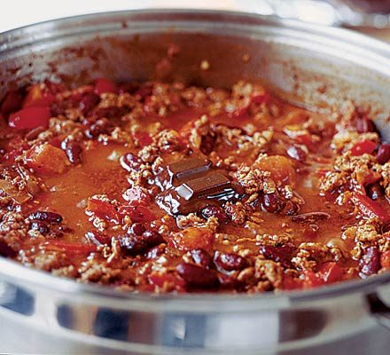

Koostisosad:
| Seguhakkliha | 400g (või enam) |
| Peekon | tunde järgi |
| Erinevad oad (valged, kidney, või) | 1+1+1 purki |
| Purustatud tomatid | 1 purk |
| Tomatipastia | 1 pakk/purk |
| Stout | 1 pudel (pool võid tegemise käigus ära juua) |
| Sibul (shallot) | 2-3 tk |
| Küüslauk | maitse järgi |
| Soja kaste (hele) | 3-4 sl |
| Erinevad chillid | vastavalt teravustaluvusele |
| suhkur/mesi | 1-2sl (tõmbab tomati happelisuse maha) |
| Sool | maitse järgi |
| Laimimahl | happelisuse paikaajamiseks lõpus |
| Tume šokolaad | 1-2 tükki |
Valmistamine:
- Prae suures potis hakkliha ja peekon. Maitsesta soolaga.
- Lisa lihale hakitud sibul ning küüslauk ning prae kuni sibul muutub läbipaistvaks.
- Haki chillid ja kuumuta koos ülejäänuga kergelt läbi.
- Lisa potti loputatud oad, purustatud tomatid, tomatipüree, stout (ära unusta lonksu endale).
- Lisa suhkur, šokolaad, sojakaste ning lase kõigel madalal tulel podiseda kuni jaksad (mida kauem seda parem, min 2h).
- Enne serveerimist timmi laimimahlaga happelisus paika ning lisa soola vastavalt maitsele.
- Serveeri koos purustatud tortillakrõpsudega ning võid ka eestipäraselt hapukoort lisada.